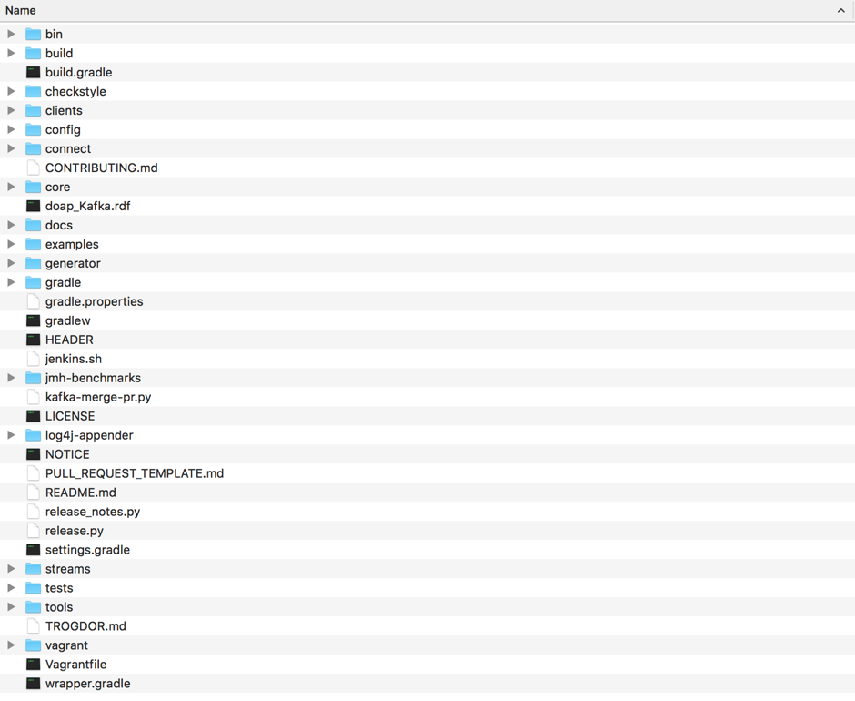
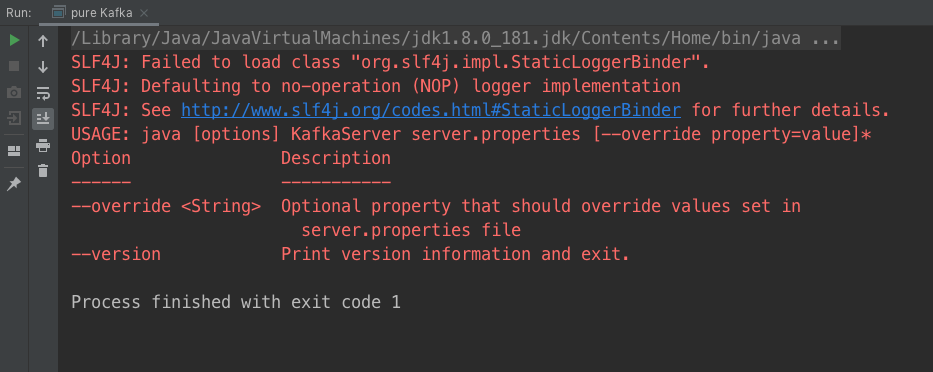
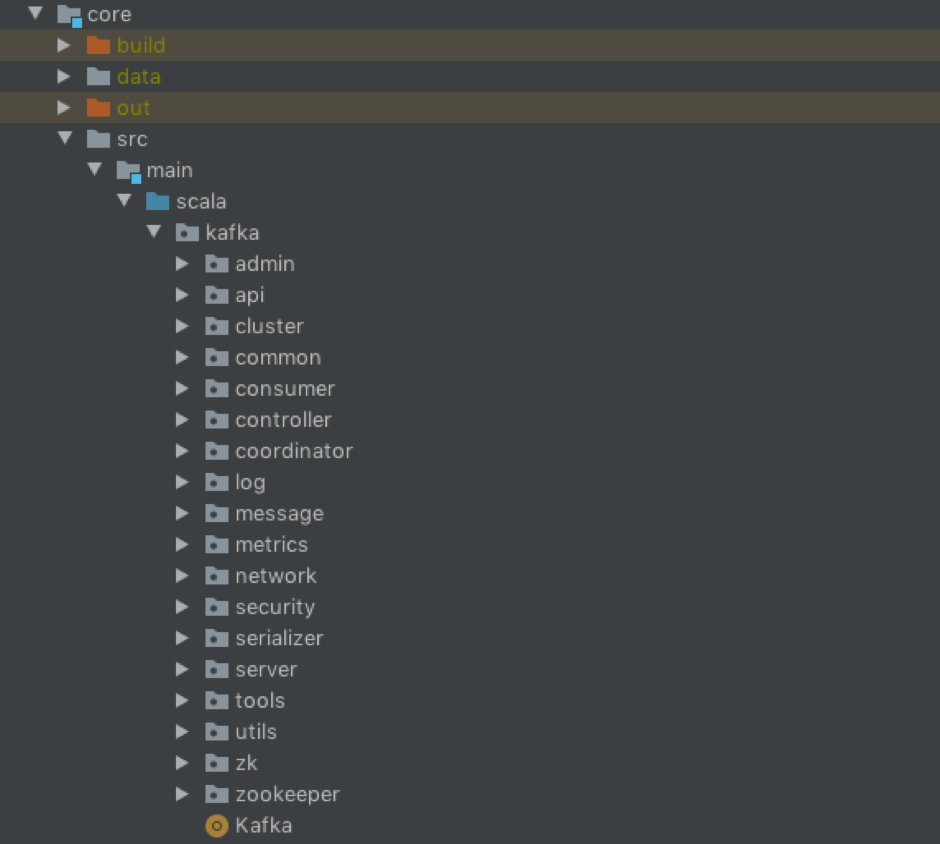

- 00 导读 构建Kafka工程和源码阅读环境、Scala语言热身.md.html
- 00 开篇词 阅读源码，逐渐成了职业进阶道路上的“必选项”.md.html
- 00 重磅加餐 带你快速入门Scala语言.md.html
- 01 日志段：保存消息文件的对象是怎么实现的？.md.html
- 02 日志（上）：日志究竟是如何加载日志段的？.md.html
- 03 日志（下）：彻底搞懂Log对象的常见操作.md.html
- 04 索引（上）：改进的二分查找算法在Kafka索引的应用.md.html
- 05 索引（下）：位移索引和时间戳索引的区别是什么？.md.html
- 06 请求通道：如何实现Kafka请求队列？.md.html
- 07 SocketServer（上）：Kafka到底是怎么应用NIO实现网络通信的？.md.html
- 08 SocketServer（中）：请求还要区分优先级？.md.html
- 09 SocketServer（下）：请求处理全流程源码分析.md.html
- 10 KafkaApis：Kafka最重要的源码入口，没有之一.md.html
- 11 Controller元数据：Controller都保存有哪些东西？有几种状态？.md.html
- 12 ControllerChannelManager：Controller如何管理请求发送？.md.html
- 13 ControllerEventManager：变身单线程后的Controller如何处理事件？.md.html
- 14 Controller选举是怎么实现的？.md.html
- 15 如何理解Controller在Kafka集群中的作用？.md.html
- 16 TopicDeletionManager： Topic是怎么被删除的？.md.html
- 17 ReplicaStateMachine：揭秘副本状态机实现原理.md.html
- 18 PartitionStateMachine：分区状态转换如何实现？.md.html
- 19 TimingWheel：探究Kafka定时器背后的高效时间轮算法.md.html
- 20 DelayedOperation：Broker是怎么延时处理请求的？.md.html
- 21 AbstractFetcherThread：拉取消息分几步？.md.html
- 22 ReplicaFetcherThread：Follower如何拉取Leader消息？.md.html
- 23 ReplicaManager（上）：必须要掌握的副本管理类定义和核心字段.md.html
- 24 ReplicaManager（中）：副本管理器是如何读写副本的？.md.html
- 25 ReplicaManager（下）：副本管理器是如何管理副本的？.md.html
- 26 MetadataCache：Broker是怎么异步更新元数据缓存的？.md.html
- 27 消费者组元数据（上）：消费者组都有哪些元数据？.md.html
- 28 消费者组元数据（下）：Kafka如何管理这些元数据？.md.html
- 29 GroupMetadataManager：组元数据管理器是个什么东西？.md.html
- 30 GroupMetadataManager：位移主题保存的只是位移吗？.md.html
- 31 GroupMetadataManager：查询位移时，不用读取位移主题？.md.html
- 32 GroupCoordinator：在Rebalance中，Coordinator如何处理成员入组？.md.html
- 33 GroupCoordinator：在Rebalance中，如何进行组同步？.md.html
- 特别放送（一）经典的Kafka学习资料有哪些？.md.html
- 特别放送（三）我是怎么度过日常一天的？.md.html
- 特别放送（二）一篇文章带你了解参与开源社区的全部流程.md.html
- 特别放送（五） Kafka 社区的重磅功能：移除 ZooKeeper 依赖.md.html
- 特别放送（四）20道经典的Kafka面试题详解.md.html
- 结束语 源码学习，我们才刚上路呢.md.html
- 捐赠
00 导读 构建Kafka工程和源码阅读环境、Scala语言热身
你好，我是胡夕。
从今天开始，我们就要正式走入Kafka源码的世界了。既然咱们这个课程是教你阅读Kafka源码的，那么，你首先就得掌握如何在自己的电脑上搭建Kafka的源码环境，甚至是知道怎么对它们进行调试。在这节课，我展示了很多实操步骤，建议你都跟着操作一遍，否则很难会有特别深刻的认识。
话不多说，现在，我们就先来搭建源码环境吧。
环境准备
在阅读Kafka源码之前，我们要先做一些必要的准备工作。这涉及到一些工具软件的安装，比如Java、Gradle、Scala、IDE、Git，等等。
如果你是在Linux或Mac系统下搭建环境，你需要安装Java、IDE和Git；如果你使用的是Windows，那么你需要全部安装它们。
咱们这个课程统一使用下面的版本进行源码讲解。
- Oracle Java 8：我们使用的是Oracle的JDK及Hotspot JVM。如果你青睐于其他厂商或开源的Java版本（比如OpenJDK），你可以选择安装不同厂商的JVM版本。
- Gradle 6.3：我在这门课里带你阅读的Kafka源码是社区的Trunk分支。Trunk分支目前演进到了2.5版本，已经支持Gradle 6.x版本。你最好安装Gradle 6.3或更高版本。
- Scala 2.13：社区Trunk分支编译当前支持两个Scala版本，分别是2.12和2.13。默认使用2.13进行编译，因此我推荐你安装Scala 2.13版本。
- IDEA + Scala插件：这门课使用IDEA作为IDE来阅读和配置源码。我对Eclipse充满敬意，只是我个人比较习惯使用IDEA。另外，你需要为IDEA安装Scala插件，这样可以方便你阅读Scala源码。
- Git：安装Git主要是为了管理Kafka源码版本。如果你要成为一名社区代码贡献者，Git管理工具是必不可少的。
构建Kafka工程
等你准备好以上这些之后，我们就可以来构建Kafka工程了。
首先，我们下载Kafka源代码。方法很简单，找一个干净的源码路径，然后执行下列命令去下载社区的Trunk代码即可：
$ git clone https://github.com/apache/kafka.git
在漫长的等待之后，你的路径上会新增一个名为kafka的子目录，它就是Kafka项目的根目录。如果在你的环境中，上面这条命令无法执行的话，你可以在浏览器中输入https://codeload.github.com/apache/kafka/zip/trunk下载源码ZIP包并解压，只是这样你就失去了Git管理，你要手动链接到远程仓库，具体方法可以参考这篇Git文档。
下载完成后，你要进入工程所在的路径下，也就是进入到名为kafka的路径下，然后执行相应的命令来构建Kafka工程。
如果你是在Mac或Linux平台上搭建环境，那么直接运行下列命令构建即可：
$ ./gradlew build
该命令首先下载Gradle Wrapper所需的jar文件，然后对Kafka工程进行构建。需要注意的是，在执行这条命令时，你很可能会遇到下面的这个异常：
Failed to connect to raw.githubusercontent.com port 443: Connection refused
如果碰到了这个异常，你也不用惊慌，你可以去这个官网链接或者是我提供的链接（提取码：ntvd）直接下载Wrapper所需的Jar包，手动把这个Jar文件拷贝到kafka路径下的gradle/wrapper子目录下，然后重新执行gradlew build命令去构建工程。
我想提醒你的是，官网链接包含的版本号是v6.3.0，但是该版本后续可能会变化，因此，你最好先打开gradlew文件，去看一下社区使用的是哪个版本的Gradle。一旦你发现版本不再是v6.3.0了，那就不要再使用我提供的链接了。这个时候，你需要直接去官网下载对应版本的Jar包。
举个例子，假设gradlew文件中使用的Gradle版本变更为v6.4.0，那么你需要把官网链接URL中的版本号修改为v6.4.0，然后去下载这个版本的Wrapper Jar包。
如果你是在Windows平台上构建，那你就不能使用Gradle Wrapper了，因为Kafka没有提供Windows平台上可运行的Wrapper Bat文件。这个时候，你只能使用你自己的环境中自行安装的Gradle。具体命令是：
kafka> gradle.bat build
无论是gradle.bat build命令，还是gradlew build命令，首次运行时都要花费相当长的时间去下载必要的Jar包，你要耐心地等待。
下面，我用一张图给你展示下Kafka工程的各个目录以及文件：

这里我再简单介绍一些主要的组件路径。
- bin目录：保存Kafka工具行脚本，我们熟知的kafka-server-start和kafka-console-producer等脚本都存放在这里。
- clients目录：保存Kafka客户端代码，比如生产者和消费者的代码都在该目录下。
- config目录：保存Kafka的配置文件，其中比较重要的配置文件是server.properties。
- connect目录：保存Connect组件的源代码。我在开篇词里提到过，Kafka Connect组件是用来实现Kafka与外部系统之间的实时数据传输的。
- core目录：保存Broker端代码。Kafka服务器端代码全部保存在该目录下。
- streams目录：保存Streams组件的源代码。Kafka Streams是实现Kafka实时流处理的组件。
其他的目录要么不太重要，要么和配置相关，这里我就不展开讲了。
除了上面的gradlew build命令之外，我再介绍一些常用的构建命令，帮助你调试Kafka工程。
我们先看一下测试相关的命令。Kafka源代码分为4大部分：Broker端代码、Clients端代码、Connect端代码和Streams端代码。如果你想要测试这4个部分的代码，可以分别运行以下4条命令：
$ ./gradlew core:test
$ ./gradlew clients:test
$ ./gradlew connect:[submodule]:test
$ ./gradlew streams:test
你可能注意到了，在这4条命令中，Connect组件的测试方法不太一样。这是因为Connect工程下细分了多个子模块，比如api、runtime等，所以，你需要显式地指定要测试的子模块名，才能进行测试。
如果你要单独对某一个具体的测试用例进行测试，比如单独测试Broker端core包的LogTest类，可以用下面的命令：
$ ./gradlew core:test --tests kafka.log.LogTest
另外，如果你要构建整个Kafka工程并打包出一个可运行的二进制环境，就需要运行下面的命令：
$ ./gradlew clean releaseTarGz
成功运行后，core、clients和streams目录下就会分别生成对应的二进制发布包，它们分别是：
- kafka-2.12-2.5.0-SNAPSHOT.tgz。它是Kafka的Broker端发布包，把该文件解压之后就是标准的Kafka运行环境。该文件位于core路径的/build/distributions目录。
- kafka-clients-2.5.0-SNAPSHOT.jar。该Jar包是Clients端代码编译打包之后的二进制发布包。该文件位于clients目录下的/build/libs目录。
- kafka-streams-2.5.0-SNAPSHOT.jar。该Jar包是Streams端代码编译打包之后的二进制发布包。该文件位于streams目录下的/build/libs目录。
搭建源码阅读环境
刚刚我介绍了如何使用Gradle工具来构建Kafka项目工程，现在我来带你看一下如何利用IDEA搭建Kafka源码阅读环境。实际上，整个过程非常简单。我们打开IDEA，点击“文件”，随后点击“打开”，选择上一步中的Kafka文件路径即可。
项目工程被导入之后，IDEA会对项目进行自动构建，等构建完成之后，你可以找到core目录源码下的Kafka.scala文件。打开它，然后右键点击Kafka，你应该就能看到这样的输出结果了：

这就是无参执行Kafka主文件的运行结果。通过这段输出，我们能够学会启动Broker所必需的参数，即指定server.properties文件的地址。这也是启动Kafka Broker的标准命令。
在开篇词中我也说了，这个课程会聚焦于讲解Kafka Broker端源代码。因此，在正式学习这部分源码之前，我先给你简单介绍一下Broker端源码的组织架构。下图展示了Kafka core包的代码架构：

我来给你解释几个比较关键的代码包。
- controller包：保存了Kafka控制器（Controller）代码，而控制器组件是Kafka的核心组件，后面我们会针对这个包的代码进行详细分析。
- coordinator包：保存了消费者端的GroupCoordinator代码和用于事务的TransactionCoordinator代码。对coordinator包进行分析，特别是对消费者端的GroupCoordinator代码进行分析，是我们弄明白Broker端协调者组件设计原理的关键。
- log包：保存了Kafka最核心的日志结构代码，包括日志、日志段、索引文件等，后面会有详细介绍。另外，该包下还封装了Log Compaction的实现机制，是非常重要的源码包。
- network包：封装了Kafka服务器端网络层的代码，特别是SocketServer.scala这个文件，是Kafka实现Reactor模式的具体操作类，非常值得一读。
- server包：顾名思义，它是Kafka的服务器端主代码，里面的类非常多，很多关键的Kafka组件都存放在这里，比如后面要讲到的状态机、Purgatory延时机制等。
在后续的课程中，我会挑选Kafka最主要的代码类进行详细分析，帮助你深入了解Kafka Broker端重要组件的实现原理。
另外，虽然这门课不会涵盖测试用例的代码分析，但在我看来，弄懂测试用例是帮助你快速了解Kafka组件的最有效的捷径之一。如果时间允许的话，我建议你多读一读Kafka各个组件下的测试用例，它们通常都位于代码包的src/test目录下。拿Kafka日志源码Log来说，它对应的LogTest.scala测试文件就写得非常完备，里面多达几十个测试用例，涵盖了Log的方方面面，你一定要读一下。
Scala 语言热身
因为Broker端的源码完全是基于Scala的，所以在开始阅读这部分源码之前，我还想花一点时间快速介绍一下 Scala 语言的语法特点。我先拿几个真实的 Kafka 源码片段来帮你热热身。
先来看第一个：
def sizeInBytes(segments: Iterable[LogSegment]): Long =
segments.map(_.size.toLong).sum
这是一个典型的 Scala 方法，方法名是 sizeInBytes。它接收一组 LogSegment 对象，返回一个长整型。LogSegment 对象就是我们后面要谈到的日志段。你在 Kafka 分区目录下看到的每一个.log 文件本质上就是一个 LogSegment。从名字上来看，这个方法计算的是这组 LogSegment 的总字节数。具体方法是遍历每个输入 LogSegment，调用其 size 方法并将其累加求和之后返回。
再来看一个：
val firstOffset: Option[Long] = ......
def numMessages: Long = {
firstOffset match {
case Some(firstOffsetVal) if (firstOffsetVal >= 0 && lastOffset >= 0) => (lastOffset - firstOffsetVal + 1)
case _ => 0
}
}
该方法是 LogAppendInfo 对象的一个方法，统计的是 Broker 端一次性批量写入的消息数。这里你需要重点关注 match 和 case 这两个关键字，你可以近似地认为它们等同于 Java 中的 switch，但它们的功能要强大得多。该方法统计写入消息数的逻辑是：如果 firstOffsetVal 和 lastOffset 值都大于 0，则写入消息数等于两者的差值+1；如果不存在 firstOffsetVal，则无法统计写入消息数，简单返回 0 即可。
倘若对你而言，弄懂上面这两段代码有些吃力，我建议你去快速地学习一下Scala语言。重点学什么呢？我建议你重点学习下Scala中对于集合的遍历语法，以及基于match的模式匹配用法。
另外，由于Scala具有的函数式编程风格，你至少要理解Java中Lambda表达式的含义，这会在很大程度上帮你扫清阅读障碍。
相反地，如果上面的代码对你来讲很容易理解，那么，读懂Broker端80%的源码应该没有什么问题。你可能还会关心，剩下的那晦涩难懂的20%源码怎么办呢？其实没关系，你可以等慢慢精通了Scala语言之后再进行阅读，它们不会对你熟练掌握核心源码造成影响的。另外，后面涉及到比较难的Scala语法特性时，我还会再具体给你解释的，所以，还是那句话，你完全不用担心语言的问题！
总结
今天是我们开启Kafka源码分析的“热身课”，我给出了构建Kafka工程以及搭建Kafka源码阅读环境的具体方法。我建议你对照上面的内容完整地走一遍流程，亲身体会一下Kafka工程的构建与源码工程的导入。毕竟，这些都是后面阅读具体Kafka代码的前提条件。
最后我想再强调一下，阅读任何一个大型项目的源码都不是一件容易的事情，我希望你在任何时候都不要轻言放弃。很多时候，碰到读不懂的代码你就多读几遍，也许稍后就会有醍醐灌顶的感觉。
课后讨论
熟悉Kafka的话，你一定听说过kafka-console-producer.sh脚本。我前面提到过，该脚本位于工程的bin目录下，你能找到它对应的Java类是哪个文件吗？这个搜索过程能够给你一些寻找Kafka所需类文件的好思路，你不妨去试试看。
欢迎你在留言区畅所欲言，跟我交流讨论，也欢迎你把文章分享给你的朋友。
© 2019 - 2023 Liangliang Lee. Powered by gin and hexo-theme-book.